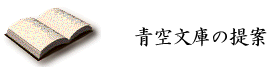

|
 |
|
電子出版という新しい手立てを友として、私たちは〈青空の本〉を作ろうと思います。 青空の本を集めた、〈青空文庫〉を育てようと考えています。 青空の本は、読む人にお金や資格を求めません。 いつも空にいて、そこであなたの視線を待っています。 誰も拒まない、穏やかでそれでいて豊かな本の数々を、私たちは青空文庫に集めたいと思うのです。 先人たちが積み上げてきたたくさんの作品のうち、著作権の保護期間を過ぎたものは、自由に複製を作れます。 私たち自身が本にして、断りなく配れます。 一定の年限を過ぎた作品は、心の糧として分かち合えるのです。 私たちはすでに、自分のコンピューターを持っています。電子本作りのソフトウエアも用意されました。自分の手を動かせば、目の前のマシンで電子本が作れます。できた本はどんどんコピーできる。ネットワークにのせれば、一瞬にどこにでも届きます。 願いを現実に変える用意は、すでに整いました。 青空の本となりうるのは、著作権の切れた作品にとどまりません。 書き手自身が「金銭的な見返りは求めない」と決めるなら、新しい作品をたった今、開くことも可能です。 一方で古典の書棚を耕しながら、もう一方で新しい書き手の作品を引き受けることができれば、空にはいつも清々しい風が渡るでしょう。 |
| トップページへ 続きを読む |